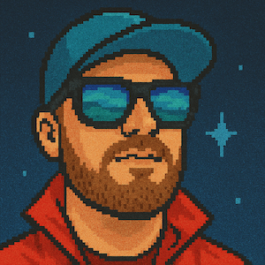

Subject / 01
Kim Fransman

Father · Golf-nerd² · Developer of stuff · Designs and 3D‑prints things, sometimes with electronics inside. Starter of too many unfinished side projects.
02About
I'm a developer with 20+ years of experience, from web and mobile to backend, devops and leadership. These days, I mostly try to say no more often.
I have a long and fruitful relationship with JavaScript, HTML & CSS, and sometimes I even do some product design, interaction design, UX design, growth-hacking and other cool buzzwords needed to deliver stuff humans love to use.
At work, I plan, strategize and produce stuff, preferably for both backend and frontend, and sometimes I do mobile stuff as well, mainly with React Native and Kotlin Multiplatform.
I also design things in CAD and 3D-print them: keyboards, mostly, and things that fix an everyday annoyance or make a round of golf a little better.
03Elsewhere